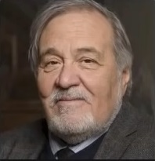
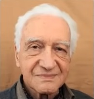

Soru 5
 1916-2016 yillari arasinda yasayan ve Osmanli Turk tarihini alaninda en derin bilgi sahibi olan Turk Tarihcisi kimdir?
- Halil INALCIK
- Ilber ORTAYLI
- Orhan KOLOGLU
- Muazzez Ilmiye CIG
1916-2016 yillari arasinda yasayan ve Osmanli Turk tarihini alaninda en derin bilgi sahibi olan Turk Tarihcisi kimdir?